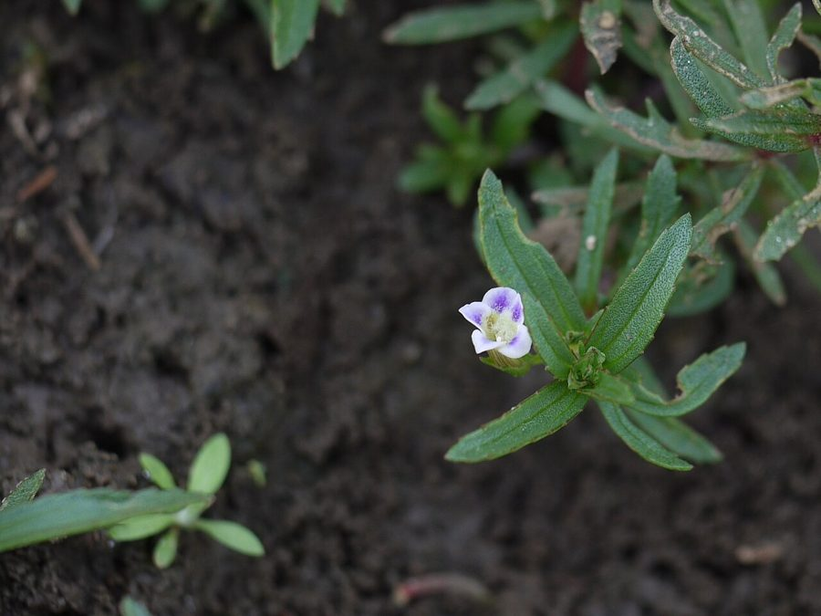

इंडियन मार्शवीडIndian Marshweed
Limnophila indica · Plantaginaceae · FLR-0387

- Scientific name वैज्ञानिक नाम
- Limnophila indica (L.) Druce, 1914
- Family कुल
- Plantaginaceae
- Hindi हिंदी
- इंडियन मार्शवीड
- Local names स्थानीय नाम
- indian marshweed
- Status here यहाँ की स्थिति
- native
- Movement आवागमन
- Resident, here all year
- Known from कहाँ दर्ज
- Others have published records from the wider Awadh–Purvanchal plain, none yet from Basti–Ayodhya अवध–पूर्वांचल से दूसरों के प्रकाशित अभिलेख, बस्ती–अयोध्या से अभी नहीं
- IUCN IUCN
- LC
- Review समीक्षा
- not yet reviewed
When to look कब देखें
Present all year. साल भर मौजूद।
Uses and possibilities उपयोग और संभावनाएँ
“Traditional medicine” means a documented traditional use, not a claim that it works. Nothing on this page is medical advice.
Drawn from the documented uses in the profile below, where each is labelled traditional, current or a research lead. All uses →
Tell it apart from इनसे अलग पहचानें
इंडियन मार्शवीड / Indian Marshweed
Limnophila indica (L.) Druce, 1914 — Plantaginaceae
इंडियन मार्शवीड — दलदली जमीनों, धान के खेतों और उथले ताल-तलैयों के किनारों पर उगने वाला एक सुगंधित छोटा जलीय पौधा है। इसमें पानी के भीतर और बाहर दो अलग-अलग प्रकार के पत्ते होते हैं; जलमग्न पत्ते बारीक कटे हुए बालों जैसे दिखते हैं जबकि पानी से बाहर निकलने वाले पत्ते गोल और साबुत होते हैं। पौधे को मसलने पर तारपीन जैसी तेज सुगंध आती है और इसके छोटे हल्के गुलाबी या सफेद फूल पानी के ऊपर खिलते हैं।
Quick Identification त्वरित पहचान
| Feature | Description |
|---|---|
| Habit | Slender, rooting aquatic or semi-aquatic herb of shallow wetland borders |
| Heterophylly | Strongly dimorphic foliage; submerged leaves finely divided, aerial leaves broader |
| Scent | Whole plant emits a distinct, pungent turpentine or balsamic aroma when crushed |
| Submerged leaves | Whorled and capillaceo-multifid, forming soft feathery underwater plumes |
| Aerial leaves | Opposite or whorled, linear-oblong, serrate to entire above the water surface |
| Flowers | Solitary, axillary, tubular; pale pink, white, or pale violet with yellow throat |
Field tip: Wade along the muddy drying borders of seasonal ponds or rice fields. Crush a few leaves between the fingers; the unmistakable, sharp resinous smell of turpentine immediately confirms this marsh herb even before flowers appear.
हिंदी:
इसके पत्तों को हाथ से मसलने पर तारपीन के तेल जैसी तेज गंध आती है।
पानी के अंदर के पत्ते धागे की तरह बारीक कटे होते हैं और बाहर के पत्ते साबुत होते हैं।
दलदली किनारों पर इसके छोटे हल्के गुलाबी फूल पत्तियों के बीच से निकलते हैं।
Morphology आकारिकी
Measurements as given by Duthie (1911, as Limnophila gratioloides):
| Measurement | Range | Source |
|---|---|---|
| Plant height | 3–8 in high | Duthie (1911) |
Limnophila indica is an aquatic or subaquatic herb with creeping, rooting stolons and erect or diffusely branched stems (Duthie 1911). The plant exhibits pronounced heterophylly in response to water depth. Submerged leaves occur in dense whorls and are finely divided into multiple hair-like or capillary segments that collapse together when withdrawn from the water.
Aerial stems rise above the water line, bearing sessile leaves in whorls or upper opposite pairs; these emerged leaves are linear to oblong, serrate or dentate, and gland-dotted on the surface (Duthie 1911). Flowers are axillary and pedicelled, solitary or rarely arranged in loose racemes. The calyx is membranous and glandular, with narrowly triangular acute lobes. The tubular corolla is two-lipped, pale pink or whitish with faint violet markings and a yellowish throat (Duthie 1911). The fruit is a subglobose capsule enclosed within the persistent membranous calyx.
हिंदी:
यह तीन से आठ इंच ऊंचा पौधा होता है जिसके तने पानी के भीतर और किनारों पर फैलते हैं।
पानी की गहराई के अनुसार इसके पत्तों का आकार बदल जाता है।
इसके छोटे फूल नली जैसे होते हैं जिनका रंग हल्का गुलाबी या सफेद होता है।
Behaviour & Ecology व्यवहार और पारिस्थितिकी
An amphibious macrophyte adapted to the dynamic hydrologic cycles of Gangetic floodplains. During the peak monsoon, it flourishes in completely submerged form in standing water up to moderate depths, with its finely dissected underwater leaves maximizing surface area for dissolved carbon dioxide and mineral uptake.
As floodwaters recede during autumn and winter, terrestrial or emergent forms develop with thicker stems and sturdier, cuticle-covered aerial leaves that tolerate open air. The species thrives in sunny, shallow margins with nutrient-rich alluvial mud, often forming dense floating or sprawling colonies that stabilize waterlogged ditch margins against erosion.
हिंदी:
यह पौधा पानी के घटने और बढ़ने के साथ अपने रूप को ढालने में पूरी तरह सक्षम है।
बाढ़ के समय यह पानी में पूरी तरह डूबकर रहता है और पानी उतरने पर किनारे पर खिलता है।
यह धूप वाले स्थानों में नम मिट्टी पर तेजी से फैलकर हरी परत बना लेता है।
Life Cycle / Phenology जीवन चक्र
Follows the seasonal monsoon rhythm of northern India. Germination of seeds begins in waterlogged paddy fields and roadside pools with the arrival of the monsoon rains. Vegetative growth is rapid throughout the wet kharif season.
Flowering commences as waters begin to recede in the post-monsoon period and continues throughout the cool winter months (Duthie 1911). Small dry capsules mature rapidly, each releasing numerous tiny, truncate brown seeds into the drying mud. As surface waters evaporate during the dry pre-monsoon summer, the vegetative parts dry out, and the species persists through seed dormancy in baked wetland soils.
हिंदी:
बरसात के दिनों में इसके बीज अंकुरित होते हैं और पौधा तेजी से बढ़ता है।
सर्दियों के दौरान इसमें फूल आते हैं और बारीक बीजों वाले छोटे फल पकते हैं।
गर्मियों में मिट्टी सूखने पर पौधा नष्ट हो जाता है और बीज अगली बारिश तक सुरक्षित रहते हैं।
Associated Species / Interactions सहजीवी प्रजातियाँ
A characteristic component of the wet littoral zone across eastern Uttar Pradesh. It regularly associates with other amphibious and wetland plants:
- Grows alongside emergent wetland herbs including Brahmi
- In deeper water zones it borders beds of submerged macrophytes such as Hydrilla and Hornwort
- Flowers are visited by small solitary bees, hoverflies, and tiny skippers seeking nectar
- Dense submerged foliage provides a protective refuge for tiny aquatic insects and fish fry
हिंदी:
यह दलदली जमीन पर Brahmi और पानी के भीतर Hydrilla के पास उगता है।
छोटे कीट और मधुमक्खियां इसके फूलों से पराग और रस इकट्ठा करती हैं।
Pests and Diseases कीट और रोग
Generally robust and resilient in native wetlands. It is occasionally fed upon by polyphagous aquatic caterpillar larvae and semi-aquatic grasshoppers that chew emerged leaves. Water snails frequently browse on decaying submerged portions.
In agricultural rice paddies, dense stands may compete with young rice seedlings for nutrients and space during the early kharif crop stage, though standard hand-weeding or mechanical harrowing easily manages its presence without chemical herbicides.
हिंदी:
पानी के घोंघे और कीड़े इसकी कोमल पत्तियों को खाते हैं।
धान के शुरुआती दिनों में यदि यह बहुत अधिक बढ़ जाए तो किसान इसे निराई करके हटा देते हैं।
Agricultural / Human Relevance कृषि प्रासंगिकता
Regarded in village farming communities primarily as a benign, fragrant marsh weed of flooded paddy fields and unlined irrigation drains. It contributes to soil stability along wet canal banks and helps filter suspended sediment from agricultural drainage water.
Chopra et al. (1956, p. 154) record that the plant was considered antiseptic, made into a liniment with coconut oil, and the juice given in fever and dysentery. This is a record of published traditional use, not medical advice. It is widely valued by aquarium enthusiasts as a decorative, fast-growing ornamental background plant.
हिंदी:
यह खेतों की मेड़ों और नहरों की मिट्टी को बहने से रोकता है।
पारंपरिक रूप से इसकी खुशबूदार पत्तियों का उपयोग घरेलू उपचारों में किया जाता रहा है।
यह मछलीघर (एक्वेरियम) में सजावट के पौधे के रूप में भी बहुत लोकप्रिय है।
Expected Locally स्थानीय रूप से अपेक्षित
Not a field record. Written from published accounts for eastern Uttar Pradesh. No confirmed local sighting yet — if you have seen it, that is what the atlas needs.
अभी तक स्थानीय पुष्टि नहीं। यह विवरण प्रकाशित स्रोतों से है, किसी अवलोकन से नहीं।
Expected in shallow inundated margins of ponds, roadside borrow pits, marshy canal edges, and flooded paddy tracts throughout eastern Uttar Pradesh. It is most easily found when water levels begin to drop after the monsoon, leaving sprawling aromatic colonies with small pinkish-white flowers in damp mud.
GBIF holds published records from the wider Awadh–Purvanchal plain, none yet from Basti–Ayodhya.
A confirmed first record from the district requires a clear photograph of flowering stems showing the dimorphic foliage, with date and coordinates, submitted through the About page.
हिंदी:
पूर्वी उत्तर प्रदेश के धान के खेतों और तालों के नम किनारों पर इसके मिलने की बहुत संभावना है।
इसके फूलों और बारीक कटी हुई पत्तियों की तस्वीर लेकर स्थानीय उपस्थिति की पुष्टि की जा सकती है।
Distribution वितरण
Global range: Widespread across tropical and subtropical regions of the Old World, from Africa and southern Asia to China, Japan, the Malay Archipelago, and Australia (Duthie 1911).
In India: Found throughout the greater part of the subcontinent in wet places, plains, and valleys, from the northern plains southwards to peninsular India (Hooker 1884; Duthie 1911).
In Uttar Pradesh: Recorded across the Gangetic plain in wet ditches, swamps, and rice tracts.
In Basti district / eastern UP: Expected as a common seasonal emergent herb in agricultural wetlands and village ponds.
हिंदी:
यह भारत के लगभग सभी राज्यों में और दुनिया के गर्म देशों में पाया जाता है।
उत्तर प्रदेश में गंगा-घाघरा के मैदानी भागों में यह बहुत आम जलीय पौधा है।
Research Questions शोध प्रश्न
- How do water depth and light intensity regulate the anatomical shift between submerged and aerial leaf forms? / पानी की गहराई से इसके पत्तों के आकार बदलने की प्रक्रिया कैसे नियंत्रित होती है?
- What specific essential oil compounds account for the strong turpentine odour of regional populations? / इसके पत्तों से आने वाली तेज गंध में कौन-से रासायनिक तत्व पाए जाते हैं?
- How long do dormant seeds survive in sun-baked paddy soil during the extreme pre-monsoon heat?
- Can students easily test the repellent properties of crushed marshweed foliage against mosquito larvae? / क्या छात्र मच्छर के लार्वा को भगाने में इसकी पत्तियों के असर का अध्ययन कर सकते हैं?
- Does the presence of this weed in paddy paddies significantly reduce early-stage crop yield?
हिंदी:
पानी की कमी और धूप में इसके बीजों के जीवित रहने की क्षमता का अध्ययन रुचिकर है।
क्या इसके अर्क का उपयोग मच्छरों के लार्वा को नियंत्रित करने में किया जा सकता है?
Similar Species मिलती-जुलती प्रजातियाँ
| Species | How to tell apart | हिंदी |
|---|---|---|
| Brahmi (Bacopa monnieri) | Prostrate creeping succulent herb with thick, unlobed obovate leaves; completely lacks turpentine aroma and feathery submerged leaves | ब्राह्मी |
| Hydrilla (Hydrilla verticillata) | Entirely submerged with sharply serrated whorled leaves; crisp and brittle; lacks turpentine scent and emergent tubular pink flowers | झांजी |
| Hornwort (Ceratophyllum demersum) | Rootless submerged macrophyte with stiff, dichotomously forked toothed leaves; leaves brittle; lacks aerial emergent flowers | हॉर्नवॉर्ट |
Field rule: An amphibious marsh herb with feathery submerged leaves, broader aerial leaves, a sharp turpentine scent when crushed, and small tubular flowers is Limnophila indica.
हिंदी:
Brahmi के पत्ते मोटे और गूदेदार होते हैं और उनमें कोई गंध नहीं होती।
Hydrilla पूरी तरह पानी में डूबा रहता है और उसके पत्ते छूने में कड़े और खुरदुरे होते हैं।
Taxonomy & Classification वर्गीकरण
Original description. First described by Carl Linnaeus in 1759 as Hottonia indica in Systema Naturae, ed. 10, 2: 919. Transferred to the genus Limnophila by George Claridge Druce in 1914 in The Botanical Exchange Club and Society of the British Isles Report for 1913, 3(5), p. 420.
Subspecies. Monotypic; Limnophila gratioloides R.Br. (1810), extensively cited in historical Indian floras (Hooker 1884; Duthie 1911), is a well-established homotypic or heterotypic synonym.
Family and order placement. Formerly placed in Scrophulariaceae; molecular phylogenetic rearrangements transferred Limnophila to the family Plantaginaceae within the order Lamiales.
Phylogenetic notes. Belongs to the tribe Gratioleae, characterised by tubular two-lipped corollas, four didynamous stamens, and adaptation to amphibious freshwater environments.
IUCN status rationale. Assessed as Least Concern (LC) on the IUCN Red List of Threatened Species due to its vast geographic distribution and lack of widespread threats.
हिंदी:
इसे मूल रूप से 1759 में लिनिअस द्वारा और 1914 में ड्रूस द्वारा लिम्नोफिला में रखा गया।
पहले इसे स्क्रोफुलारिएसी कुल में रखा जाता था, पर अब यह प्लांटागिनेसी कुल में आता है।
Photo Gallery फोटो गैलरी
No photos yet — add field photos to media/species/indian_marshweed/ and run node scripts/sync_photos.js.
Photos needed आवश्यक फोटो
- [ ] Flowering aerial stem showing emerged flowers and foliage (फूलों और पत्तियों की स्पष्ट तस्वीर)
- [ ] Submerged feathery leaves spreading in clear water (पानी के भीतर बारीक कटी पत्तियों की तस्वीर)
References संदर्भ
- Druce, G. C. (1914). The Botanical Exchange Club and Society of the British Isles Report for 1913, 3(5), p. 420.
- Hooker, J. D. (1884). The Flora of British India. Vol. 4. London: L. Reeve & Co., pp. 271–272 (as Limnophila gratioloides).
- Duthie, J. F. (1911). Flora of the Upper Gangetic Plain, and of the Adjacent Siwalik and Sub-Himalayan Tracts. Vol. 2. Calcutta: Superintendent of Government Printing, p. 147 (as Limnophila gratioloides).
- Lansdown, R. V. (2014). Limnophila indica. The IUCN Red List of Threatened Species 2014: e.T169024A45461779. doi:10.2305/IUCN.UK.2014-1.RLTS.T169024A45461779.en.
- Chopra, R. N., Nayar, S. L. & Chopra, I. C. (1956). Glossary of Indian Medicinal Plants. New Delhi: Council of Scientific & Industrial Research, p. 154.
- GBIF Occurrence Data — Limnophila indica, India (2025).
Source file: species/flora/aquatic/indian_marshweed.md